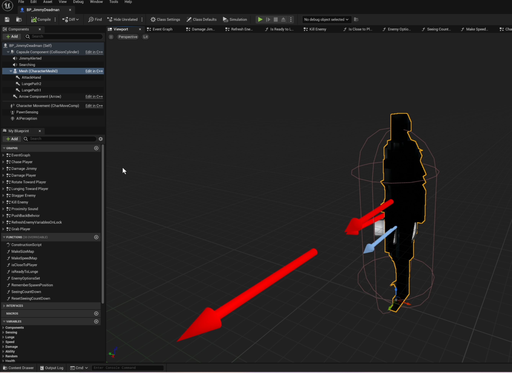
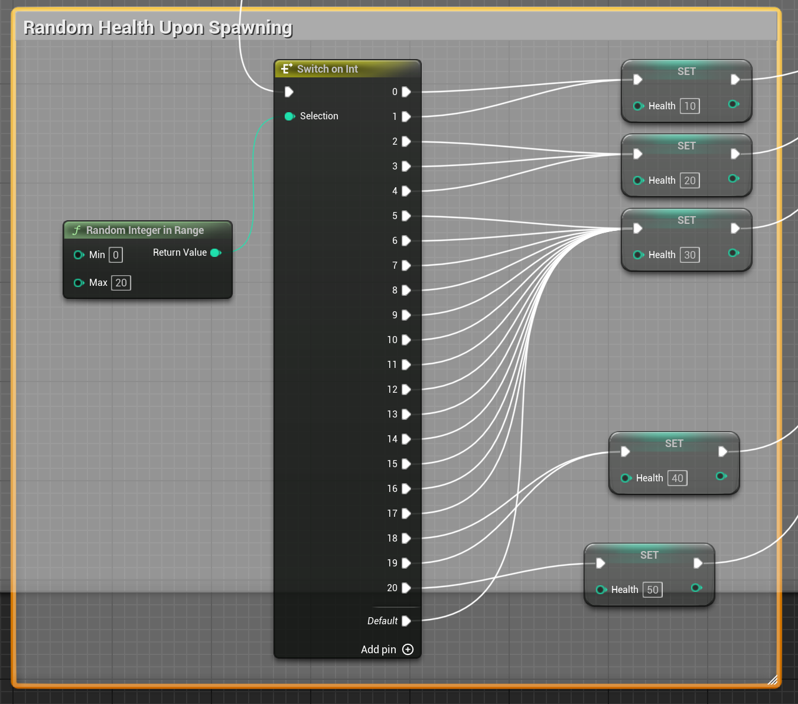

Our game AI was made to emulate a classic Resident Evil™ Zombie. It's slow, unintelligent, but aggressive and sometimes unpredictable. Because of how simple the behavior was set to be, a Finite State Machine suited the problem. Plus, we would have finer control over its more unpredictable aspects.

General layout of the enemy blueprint.
Each state is transitioned to based on different boolean values. Custom-made animations were created to play when entering these states as well.
A benefit of designing things this way was the innate modularity. If a designer wanted a behavior done, there was a clear translation to implementation.
One of the ways we wanted to make players feel uneasy was through randomizing attributes so they couldn't get a clear read on enemy intent.
Playtests revealed frustration with the lunge-locking, so this behavior was made probabilistic based on the player's equipped item:
This gave players a fair chance to always evade enemies, without making them entirely invulnerable.
Health is randomly selected between 10-50 HP upon spawning. This forces players to adapt ammo conservation strategies when encountering a "tougher" variant.

The player always has a 50% chance of staggering the enemy when landing a successful hit, providing a visible reaction to damage.
I used notifications through the animation system to set state values, offering near frame-perfect collision queries and finer-grain control compared to simple delays activated based on the animation's start and duration.